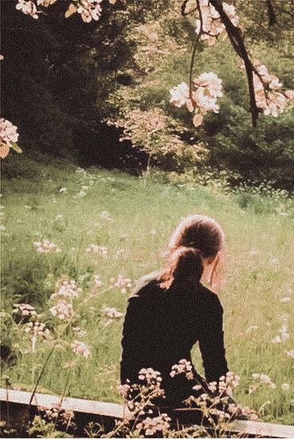

She was never afraid of being alone. She was afraid of finding out that the people beside her never truly wanted to be there.
For years, she lived surrounded by smiles that disappeared the moment she walked away from the table. People who laughed with her in the morning would whisper about her by night. Honest mistakes became stories, these stories became rumours, and rumours became versions of her that she could no longer recognise. She was judged without being heard, laughed upon behind her and blamed for things she never intended to happen.
Every small misunderstanding somehow became a fight and somehow in every fight her name got involved even though she was never there. And after years of being made to feel like she was the problem, she slowly began to believe that maybe she really was.
Maybe she was the reason people argued. Maybe she was the reason someone cried. Maybe things would have been better if she had simply stayed quiet, stayed away or never been there at all. And the saddest part of everything was that she never knew whether any of it was true.
Now she has new friends, people who make her laugh in ways she once thought she had forgotten. But the past has a strange way of following someone who is desperately trying to leave it behind.
She wonders whether her friends genuinely like her or whether they are simply too kind to leave. Whether they choose her because they want to or because they don't want to hurt her feelings.
And when she notices people treating her friends differently because of their association with her, the guilt becomes unbearable.
"Are they being judged because of me?"
"Would their lives be easier if they weren't my friends?"
"Am I bringing the very people I love into the pain I've spent years trying to escape?"
She never says any of these things aloud. Because she has always been the girl who smiles. The girl who says she's tired when she's actually breaking. The girl who blames a headache, a sleepless night, or exam stress when the truth is that her mind has been making scenarios since she can remember.
She never learned how to say, "I'm not okay."
Growing up, she learned that sadness was something to hide, that crying in front of others meant exposing a weakness. She never grew up with the kind of love where people say it's okay to not be okay, and she believed that showing people how much they had hurt her only gave them another topic to talk about.
So she became good at pretending. So good that even the people closest to her never questioned it. Her friends see someone who is happy. Her family sees someone stressed about exams. Her siblings see the same girl they've always known.
Nobody sees the girl lying awake at night, replaying conversations, wondering whether her words hurt someone or whether someone secretly judged her for what she did or what she said or whether someone secretly hates her. Nobody knows how many times she has cried silently over things she cannot explain. Nobody knows the sudden anxiety attacks she gets.
And nobody knows how scared she is. Not of someone or something — but she is scared of herself.
Not because she wants to hurt anyone, but because she has convinced herself that somehow even without meaning to, she always does.
She carries expectations that feel heavier every year. Expectations to succeed, to make people proud, to never disappoint. And somewhere between trying to become everything everyone wanted, she forgot how to ask herself what she actually needed.
Her love for her close ones is so genuine and deep that she can't even keep a count. She notices when their voices change, when their smiles seem forced, when something is wrong. She would rather carry her own sadness than let someone she loves feel responsible for it.
She doesn't want sympathy. She doesn't want people walking on eggshells around her. She doesn't want people to start acting different around her.
All she wants is to be loved without having to question why.
To have friends without wondering whether she deserves them.
To make a mistake without fearing it will become another story told behind her back.
To leave the past behind without having it dragged into every new beginning.
But how does someone learn to trust when the people who taught her what friendship meant were also the people who made her afraid of it?
How does someone believe she deserves happiness when she has spent most of her life believing she is the reason other people lose their happiness?
Sometimes, she wishes someone could look past the smile. Not to pity her. Not to fix her. Not to treat her differently. But just to understand that the girl who seems perfectly fine has spent so much time fighting battles against herself nobody knows exist.
She doesn't want to be someone's burden. She doesn't want to be someone's regret. She doesn't want to be the reason anyone gets hurt. She just wants, for once, to stop feeling like she has to apologise for existing.
And maybe the truth she has never allowed herself to believe is that not every argument was her fault. Not every tear was hers to prevent. Not every rumour was hers to correct. And that not every person who chose to leave was someone she failed to keep.
Maybe her friends who are with her now are with her because they genuinely see something worth loving.
Maybe she doesn't have to earn every bit of kindness she receives.
But tonight, she still doesn't know how to believe any of that.
So she wipes her tears, puts her phone down, closes her eyes, and promises herself that tomorrow she will be fine.
Just like yesterday.
Just like every day before.
And if someone asks why she looks tired, she'll smile and say, "I didn't sleep well."
Because saying "I spent the whole night wondering whether everyone I love would be happier without me" feels far more terrifying than another sleepless night.